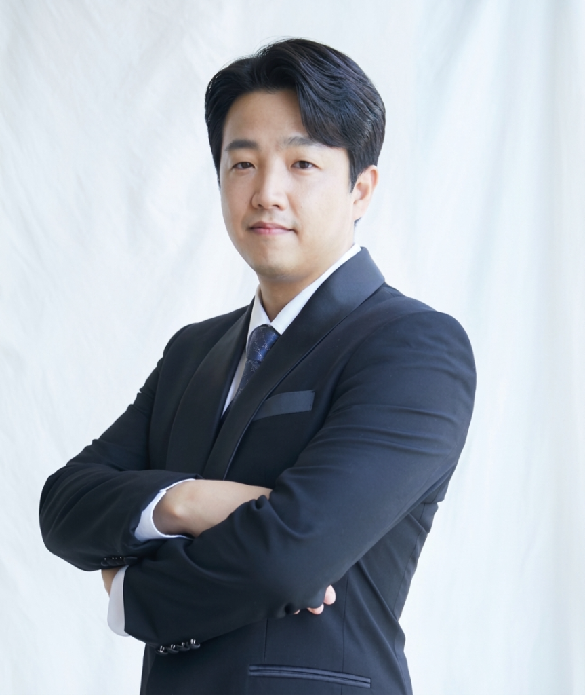
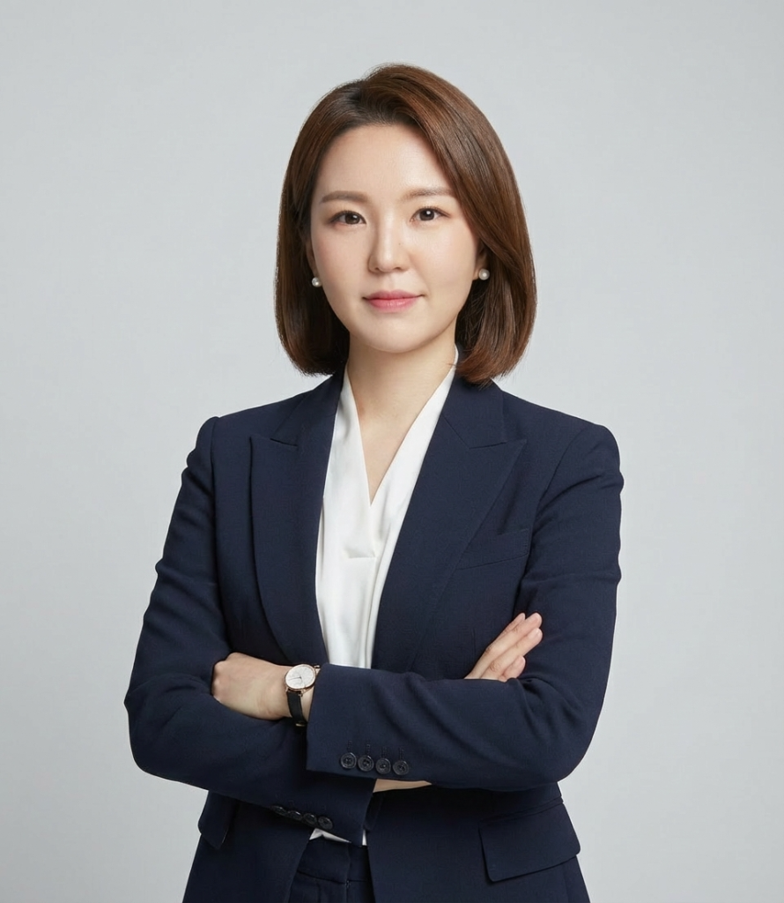

경험 많은 전문가들이 여러분의 노동 문제를 직접 해결합니다

YOU SANG GUN
노동분쟁 해결과 산업재해 분야의 전문가로, 광주○○물류센터 살인사건 산재승인, 소음성난청 행정소송 승소 등 굵직한 사건들을 처리해온 실력파 노무사입니다. 동국대학교 관광경영·경영학을 전공하고 공인노무사 27기 회장을 역임하며 노동계 네트워크를 구축, 현재는 국민권익위원회 노동법률 전문위원으로도 활동 중입니다.

SHIN HYE KYOUNG
Citi Bank Korea, GS계열사 등 대기업 인사실무 경험을 쌓은 후 2018년 공인노무사 자격을 취득한 노동법 전문가입니다. 특히 직장 내 괴롭힘 분야에서 서울관악지청 판단 전문위원으로 활동하며 탁월한 전문성을 인정받고 있으며, 노동인권 교육 분야에서도 활발히 활동하고 있습니다.
서울관악지청 직장 내 괴롭힘 판단 전문위원으로 실제 사건을 조사·판단하는 경험을 갖추고 있어, 기업의 예방체계 구축부터 사건 처리까지 현장 경험 기반의 전문 서비스를 제공합니다.
서울시 교육청 공식 노동인권 강사로서 중고등학교 학생, 기업 임직원, 공공기관 종사자 등을 대상으로 노동법률 교육을 진행합니다.
SHIM SANG SOL
대한민국 최고 명문 서울대학교를 졸업한 신진 공인노무사입니다. 한영외국어고등학교 출신으로 탁월한 학문적 역량과 뛰어난 언어능력을 갖추고 있습니다. 젊은 에너지와 최신 노동법 이론을 겸비하여 유정노동법률사무소의 새로운 성장 동력이 되고 있습니다.
서울대학교 졸업 — 대한민국 최고 명문대학으로, 최상위 학문적 역량을 보유하고 있습니다.
한영외국어고등학교 졸업 — 전국 최고 수준의 외국어고등학교로, 우수한 외국어 능력과 국제감각을 갖추고 있습니다.
서울대학교에서 쌓은 탄탄한 이론적 기반과 한영외고에서 습득한 언어 능력을 바탕으로, 외국계 기업 및 글로벌 노무 이슈에 대한 자문도 가능합니다. 유정노동법률사무소의 미래를 이끌어갈 신진 전문가입니다.
유정노동법률사무소를 함께 만들어가는 전문 인력들입니다
단체협약, 노동위원회 심판, 부당해고 등 노동분쟁 및 노동조합 관련 업무를 전담합니다.
4대보험 신고, 보험사무대행, 정부지원금 신청 등 보험사무 전반을 담당합니다.
상담 예약, 서류 접수, 행정 처리 등 고객서비스를 위한 전문 행정팀이 운영됩니다.